模块四：公用会场预定管理
围绕会场资源台账，实现会议预定、审批确认、保障协同与会场锁定的全生命周期闭环。
耗材管理
公产房管理
预定管理
5.1 业务现状
会场预定依赖人工协调与纸质登记，信息不对称容易造成资源冲突或闲置。
会场占用不透明
占用不公开，申请民警需电话或微信反复确认；全年会议约大几千场，人工确认压力大。
审核规则难约束
提前时间、时长上限、涉密要求等缺少前置校验，主要靠人工核查。
保障对接易遗漏
桌型、音响、麦克风等保障需求靠口头交接，容易遗漏。
取消变更无留痕
会议推迟或取消不能实时联动，空闲时段难以及时释放。
5.2 建设方案
会场查询与智能申请
建立会场台账和占用看板，支持按人数、涉密要求、桌型等条件筛选可用会场。提交时自动校验容量、锁定、时间冲突等规则，并支持会前提醒。
审核确认与保障协同
会场管理员审核申请和变更，通过后指派接待员或保障人员。接待员在移动端确认执行；会议取消或提前结束后，系统及时释放占用时段。
5.3 预期成效-精准保障
通过流程线上办理与规则主动校验，提升会场使用效率与会议服务满意度。
| 指标 | 原有方式 | 系统建设后 | 预期变化 |
|---|---|---|---|
| 占用查询 | 电话或微信群反复协调 | 甘特图展示，按条件筛选 | 信息透明 |
| 冲突控制 | 纸质登记，易遗漏撞场 | 规则实时校验并拦截 | 撞场率降至 0% |
| 保障对接 | 保障靠微信，易漏记 | 保障需求绑定任务 | 对接更准确 |
| 周转利用 | 取消结束反馈慢，时段闲置 | 一键结束，实时释放 | 周转率提升 30%+ |
| 年度统计 | 全年约大几千场，人数粗估 | 沉淀场次、人次、取消率和工作量 | 统计更准确 |
5.4 场景演示
以一次日常会议预定、审核、保障派发到提前结束清退为例，展示系统如何形成全生命周期闭环。
1. 会场查询：申请人通过会场占用查询或会场可用性查询，按日期、意向时段、参会人数、涉密要求等条件筛选可用会场，系统同步展示已有预定和会场锁定时段。
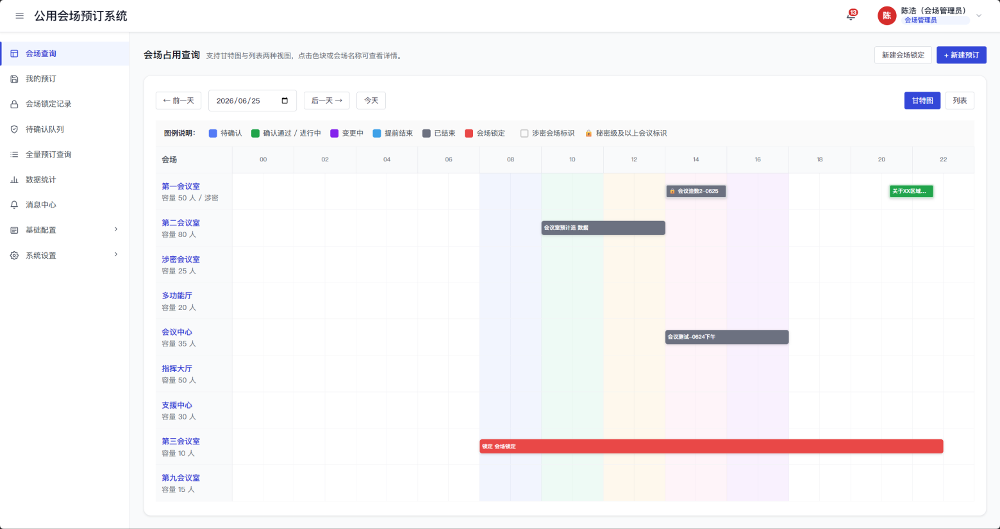
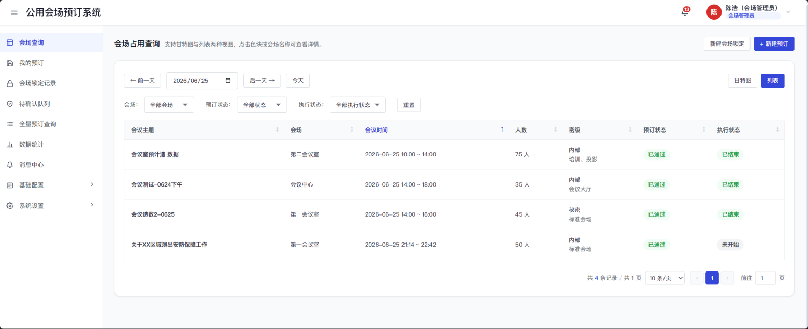
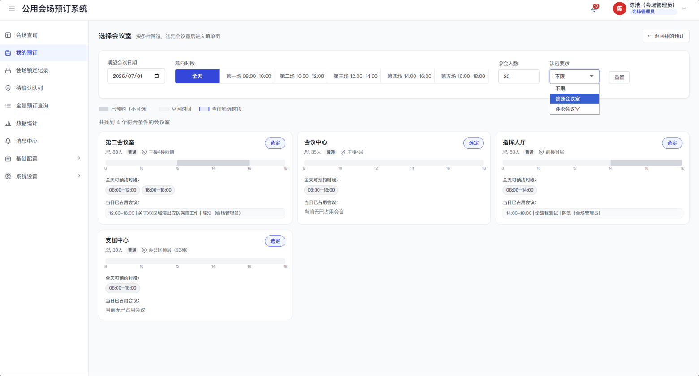
2. 提申请：申请人选择会场后进入预定表单，填写会议主题、会议时间、参会人数、会议属性、会场配置需求和保障与服务内容，可保存草稿或提交申请。
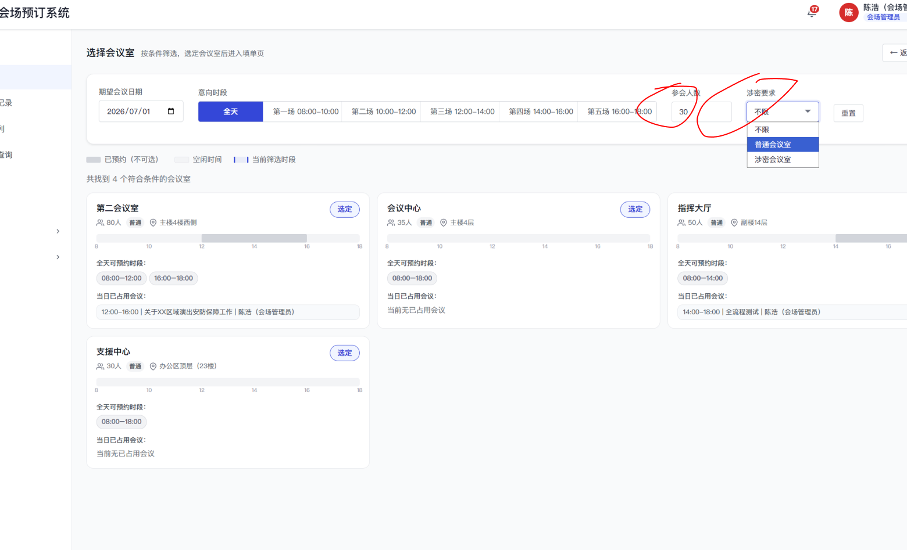
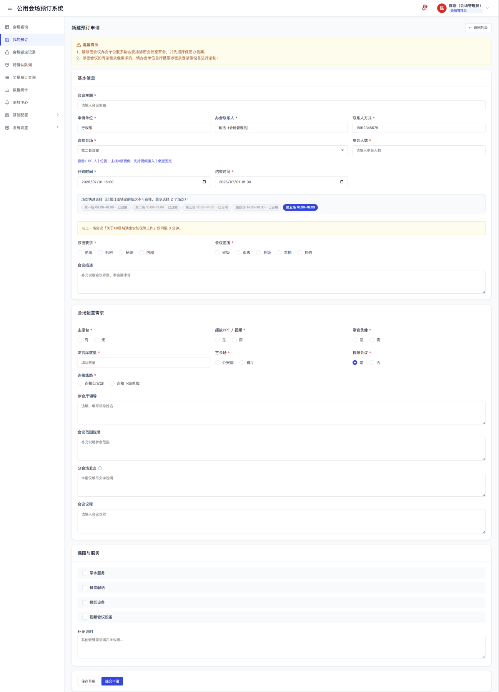
3. 规则校验：系统围绕提前申请、会场容量、会议时长、时间冲突、锁定占用、桌型要求、涉密属性和视频保障等规则进行自动校验，命中阻断类规则时禁止提交，命中提醒类规则时弹窗提示后由申请人确认。
4. 管理员确认：预定提交后进入待确认队列，会场管理员查看预定详情，可进行确认通过、拒绝或取消；确认通过时可指派会议保障人员。
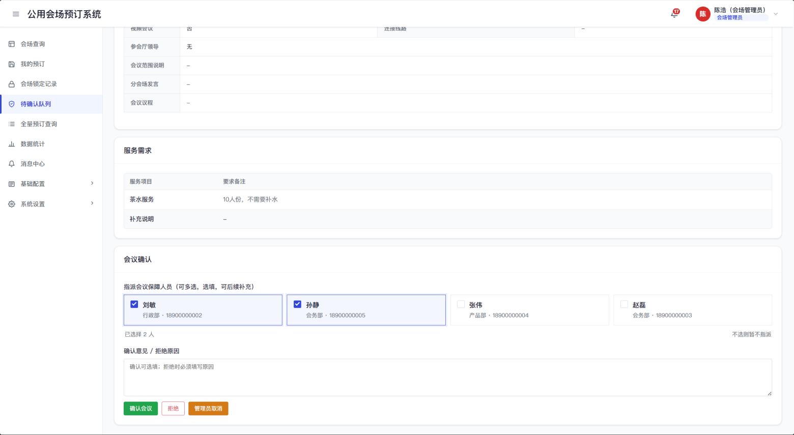
5. 保障协同：保障人员接收会议保障任务，查看会议详情、联系人、议程和保障与服务需求；如无法承接，可发起转班，系统同步通知新旧保障人员。
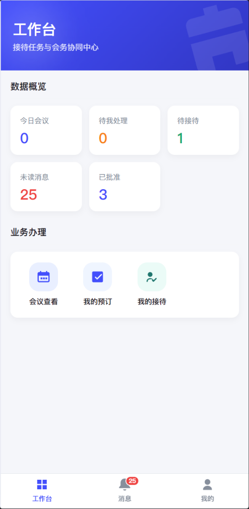
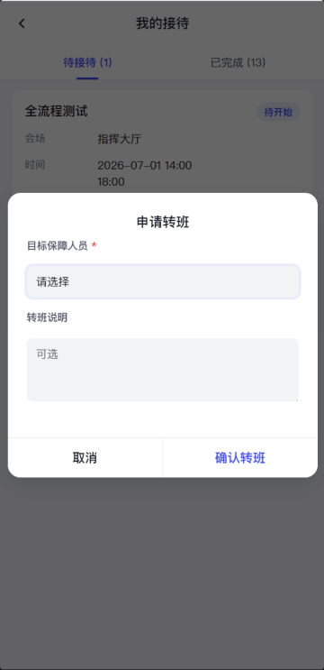
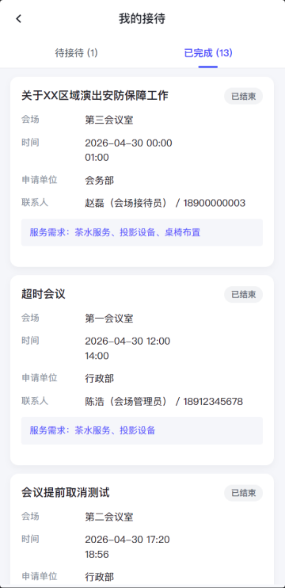
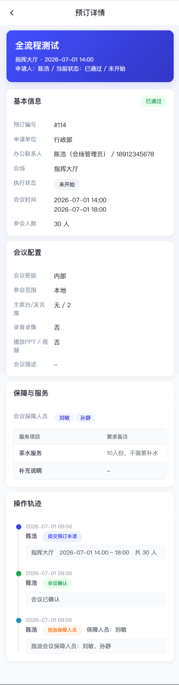
6. 变更、取消与提前结束：会议未归档前，申请人可根据权限发起取消、变更、修改保障与服务或提前结束；变更申请重新进入管理员确认，原会议时段在变更处理中继续占用。
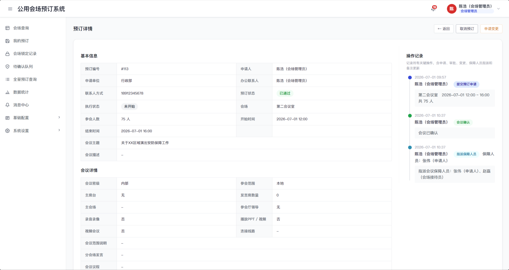
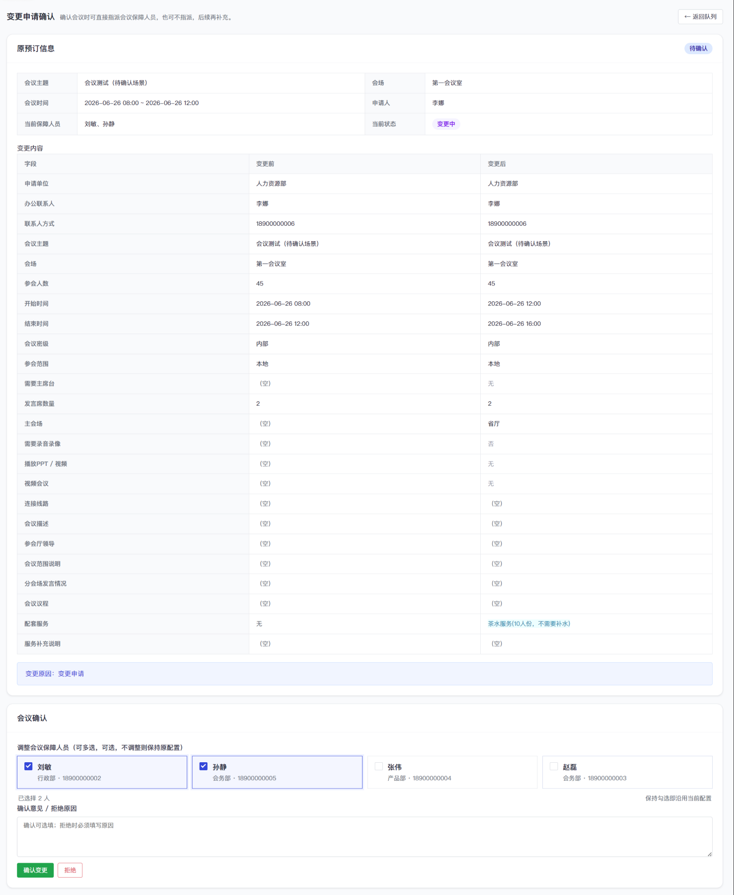
7. 会后归档：会议结束或提前结束后，系统进入归档展示状态，管理员可填写会后备注，系统保留预定详情、服务需求、操作记录和消息通知，便于后续追溯。
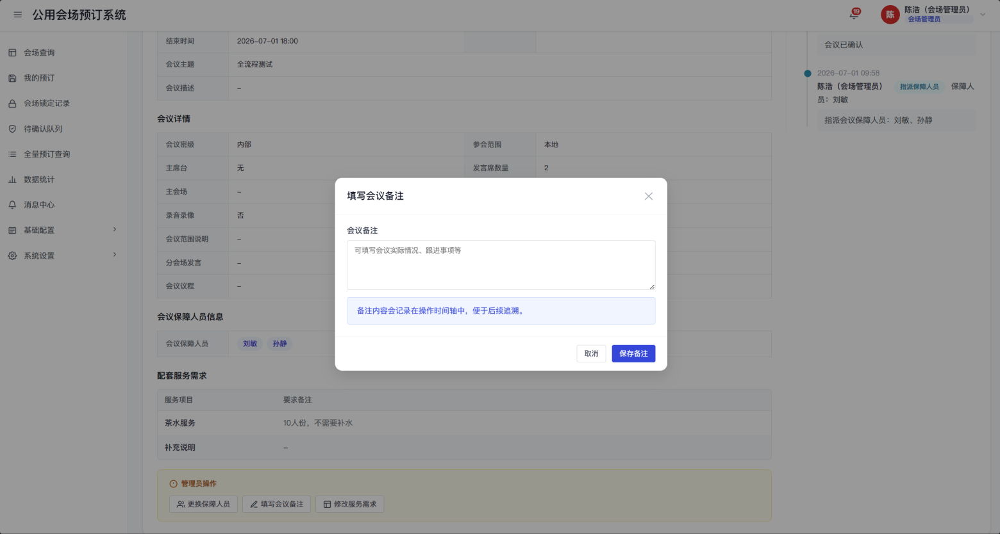
8. 统计分析：系统对会场使用场次、使用时长、确认状态、执行状态、取消率、提前结束情况和保障人员工作量进行统计分析，支撑会场资源调度和会议保障管理。
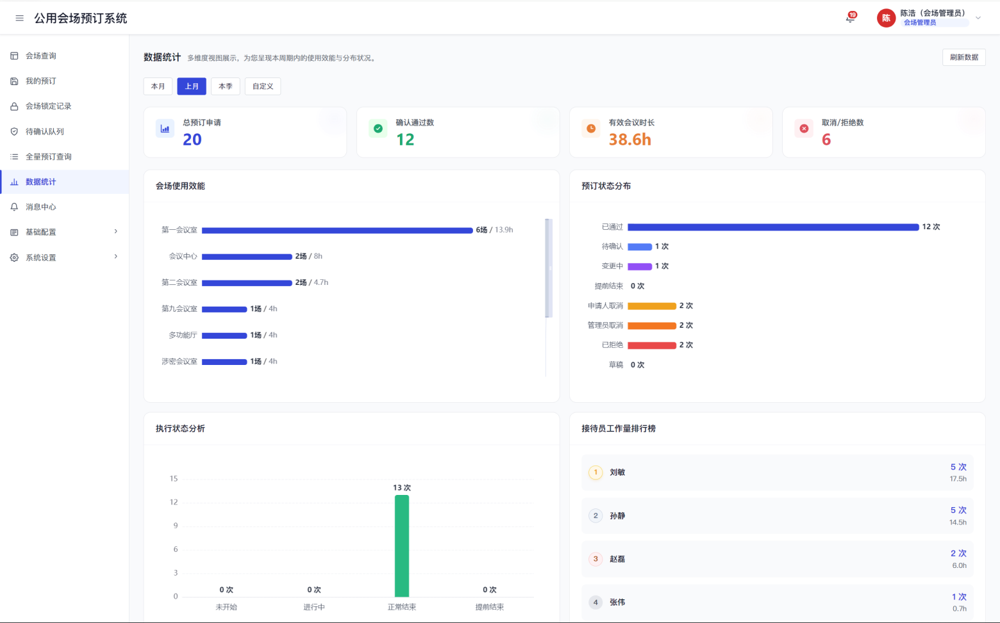
该流程覆盖从“查询会场、提交预定、规则校验、管理员确认、保障协同”到“变更取消、会后归档、统计分析”的完整操作过程，实现会议预定全过程线上流转、协同保障和留痕管理。
5.5 建设价值
推动公用会场管理向“资源看板准、申请规则严、保障指派清、归档统计全”全面转型。